Путь «Тьма»
От слабой к сильной: Seq 9 «Бессонный» → Seq 1 «Рыцарь Несчастья». Сменить путь можно на «Смерть» — с Seq 5 и сильнее, зельем на ступень выше (как).
| Seq | Последовательность | Ступень сервера |
|---|---|---|
| 9 | Бессонный | II |
| 8 | Полуночный поэт | III |
| 7 | Кошмар | IV |
| 6 | Утешитель душ | V |
| 5 | Колдун духов | VI |
| 4 | Ночной Страж | VII |
| 3 | Епископ Ужаса | VIII |
| 2 | Слуга Сокрытия | — |
| 1 | Рыцарь Несчастья | — |
У каждой последовательности: зелье и его ингредиенты (главный — первым), способности, которые она открывает, и отыгрыш — действия, которые переваривают зелье. Ингредиенты указаны с двумя самыми доступными источниками; все — по ссылке. Ингредиенты Seq 9–6 этого пути бывают и в товарах у жителей Торговец Потусторонних и Священник Вечной Ночи — у каждого по 2 случайных предложения на уровень (цены).
Seq 9 · Бессонный
Зелье  Бессонный Зелье, формула
Бессонный Зелье, формула  Бессонный Рецепт зелья (Последовательность 9). Эта Seq нужна для ступени II.
Бессонный Рецепт зелья (Последовательность 9). Эта Seq нужна для ступени II.
Ингредиенты
- Цветок полуночной красавицы — блок: Скалковый катализатор (только природный блок) — 35 % за блок; сундук: Постройки Мира духов — 30 %. Все источники (5)
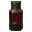
Кровь Бестеневого демонического волка — добыча: Волк (ночью; во второй руке пустая бутылка, она тратится) — 35 % за убийство игроком; существо мода: Мрачный Жнец (водится: Мир духов, Подземный мир; приходит и Ночью Мира духов) — 6,5 % за убийство. Все источники (4)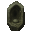
Гнездо демонического червя Сискун — блок: Грязь, Корнистая земля (лопатой; в биоме: Болото, Мангровое болото; только природный блок) — 8 % за блок; существо мода: Злоуст (водится: Мир духов; приходит и Ночью Мира духов) — 6,7 % за убийство. Все источники (4)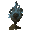
Пепел Врат Анх — крафт: костёр; сундук: Постройки Мира духов — 35 %. Все источники (5) Осколок аметиста — обычный предмет
Осколок аметиста — обычный предмет
Способности
- Медитация — Медитировать, восполняя духовность
- Физическое усиление (пассивная)
- Ночной образ жизни (пассивная) — Становиться сильнее ночью
Отыгрыш — переваривание за действие и перерыв между засчитанными:
- Убить во тьме — 1,4 %, раз в 2 с
- Посмотреть в подзорную трубу — 0,47 %, раз в 8 с
- Убить моба, не нацеленного на вас — 0,47 %, раз в 5 с
- Не спать всю ночь — 1,9 %, раз в 30 с
- Стоять в полной темноте — 0,28 %, раз в 15 с
- Убить во тьме — 0,76 %, раз в 5 с
Seq 8 · Полуночный поэт
Зелье 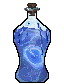 Полуночный поэт Рецепт зелья (Последовательность 8). Эта Seq нужна для ступени III.
Полуночный поэт Рецепт зелья (Последовательность 8). Эта Seq нужна для ступени III.
Ингредиенты
- Колокольчик-ловец душ — крафт: верстак; сундук: Постройки Мира духов — 24 %. Все источники (5)
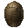
Грецкий орех — блок: Листья тёмного дуба — 3 % за блок; сундук: Дом в деревне на равнине — 25 %. Все источники (5)- Озёрная вода, только что отразившая космос — пустая бутылка: источник воды (ночью, без дождя, под открытым небом и не в океане) — 80 % за попытку, бутылка остывает 1 с; сундук: Постройки Мира духов — 32 %. Все источники (4)
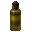
Гной Блуждающей кожи — крафт: верстак; существо мода: Гнойная рука (водится: Мир духов) — 5,7 % за убийство. Все источники (4) Эндер-жемчуг — обычный предмет
Эндер-жемчуг — обычный предмет
Способности
- Полуночная поэма — Прочесть ночную поэму, чтобы усыпить или атаковать
Отыгрыш — переваривание за действие и перерыв между засчитанными:
- Использовать нотный блок — 1,3 %, раз в 10 с
- Использовать кафедру — 1,3 %, раз в 15 с
- Применить «Полуночная поэма» — 1,7 %, раз в 15 с
- Прочитать подписанную книгу — 0,67 %, раз в 15 с
- Взаимодействовать с книгой — 0,67 %, раз в 15 с
- Поставить табличку — 0,42 %, раз в 10 с
- Использовать проигрыватель — 0,42 %, раз в 15 с
Seq 7 · Кошмар
Зелье 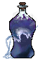 Кошмар Рецепт зелья (Последовательность 7). Эта Seq нужна для ступени IV.
Кошмар Рецепт зелья (Последовательность 7). Эта Seq нужна для ступени IV.
Ингредиенты
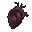
Сердце ворона-пожирателя снов — добыча: Разбойник — 8 % за убийство игроком; добыча: Поборник — 8 % за убийство игроком. Все источники (5) Веко Туманного наблюдателя — крафт: верстак; существо мода: Полупрозрачный чародей (водится: Мир духов; приходит и Ночью Мира духов) — 4,5 % за убийство. Все источники (4)
Веко Туманного наблюдателя — крафт: верстак; существо мода: Полупрозрачный чародей (водится: Мир духов; приходит и Ночью Мира духов) — 4,5 % за убийство. Все источники (4)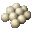
Семена белой горчицы — добыча: Кадавр (убить игроком) — 6 % за убийство; сундук: Пустынный храм — 35 %. Все источники (4)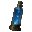
Звёздная вода с места ритуала — крафт: верстак; сундук: Постройки Мира духов — 34 %. Все источники (5)- Мембрана фантома — обычный предмет
Способности
- Духовное зрение
- Кошмар — Усыпить цель и войти в её сон. В этом состоянии можно перекраивать блоки, замуровывая в них врагов, сковывать цель, атаковать её или телепортироваться на короткие расстояния. После окончания кошмара все разрушения блоков откатываются
Отыгрыш — переваривание за действие и перерыв между засчитанными:
- Убить во тьме — 0,74 %, раз в 2 с
- Убить исподтишка — 0,74 %, раз в 2 с
- Применить «Кошмар» — 1,5 %, раз в 20 с
- Стоять в полной темноте — 0,22 %, раз в 20 с
- Убить при низком здоровье — 0,44 %, раз в 5 с
Seq 6 · Утешитель душ
Зелье 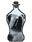 Утешитель душ Рецепт зелья (Последовательность 6). Эта Seq нужна для ступени V.
Утешитель душ Рецепт зелья (Последовательность 6). Эта Seq нужна для ступени V.
Ингредиенты
- Череп глубоко спящего — крафт: верстак; существо мода: Безголовая невеста (водится: Мир духов) — 10 % за убийство. Все источники (4)
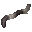
Червь духа — блок: Мицелий (лопатой; только природный блок) — 12 % за блок; существо мода: Погибель (водится: Мир духов; приходит и Ночью Мира духов) — 5 % за убийство. Все источники (4)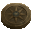
Компас, связанный с Астральным миром — крафт: верстак; существо мода: Погибель (водится: Мир духов; приходит и Ночью Мира духов) — 1,7 % за убийство. Все источники (4)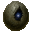
Ядро блуждающего астероида — блок: Обсидиан (только природный блок) — 3 % за блок; сундук: Постройки Мира духов — 24 %. Все источники (5) Пшеница — обычный предмет
Пшеница — обычный предмет
Способности
- Реквием — Усыпить духовное тело цели
Отыгрыш — переваривание за действие и перерыв между засчитанными:
- Покормить животное — 0,63 %, раз в 10 с
- Приручить животное — 0,63 %, раз в 15 с
- Применить «Реквием» — 1,3 %, раз в 20 с
- Поставить фонарь душ — 0,38 %, раз в 10 с
- Поставить факел душ — 0,32 %, раз в 5 с
- Подобрать кость — 0,32 %, раз в 5 с
Seq 5 · Колдун духов
Зелье 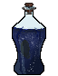 Колдун духов Рецепт зелья (Последовательность 5). Эта Seq нужна для ступени VI.
Колдун духов Рецепт зелья (Последовательность 5). Эта Seq нужна для ступени VI.
Ингредиенты
- Источник безумных снов — крафт: верстак; существо мода: Демон знания (водится: Мир духов, океаны; приходит и Ночью Мира духов) — 14 % за убийство.
- Любимые еда или питьё — подарок: Подарок жителей Герою деревни — 25 %; сундук: Постройки Мира духов — 11 %.
 Астрономические, географические и фольклорные знания трёх галактик — существо мода: Кролик знаний (водится: Мир духов) — 19 % за убийство.
Астрономические, географические и фольклорные знания трёх галактик — существо мода: Кролик знаний (водится: Мир духов) — 19 % за убийство.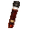
Чужая кровь — добыча: Эндермен (убить игроком) — 15 % за убийство. Все источники (3)- Пчелиные соты — обычный предмет
Способности
- Повеление духами — Повелевать духами, заставляя их подчиняться
Отыгрыш — переваривание за действие и перерыв между засчитанными:
- Размножить животных — 0,53 %, раз в 15 с
- Использовать окружение — 0,53 %, раз в 15 с
- Использовать стол зачаровывания — 0,32 %, раз в 10 с
- Сварить зелье — 0,32 %, раз в 15 с
- Убить нежить — 0,32 %, раз в 5 с
Seq 4 · Ночной Страж
Зелье 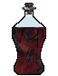 Ночной Страж Рецепт зелья (Последовательность 4). Эта Seq нужна для ступени VII.
Ночной Страж Рецепт зелья (Последовательность 4). Эта Seq нужна для ступени VII.
Ингредиенты
 Ночной Страж Характеристика Потустороннего (Последовательность 4) — характеристика Потустороннего
Ночной Страж Характеристика Потустороннего (Последовательность 4) — характеристика Потустороннего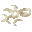
Обрезки ногтей разных людей — крафт: верстак; существо мода: Гнойная рука (водится: Мир духов) — 9,4 % за убийство. Все источники (4)- Сапфир — крафт: верстак; существо мода: Синий чародей (водится: Мир духов; приходит и Ночью Мира духов) — 5,3 % за убийство. Все источники (4)
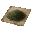
Порошок вербены — блок: Розовый тюльпан, Пион (ножницами) — 25 % за блок; сундук: Постройки Мира духов — 54 %. Все источники (4) Сахар — обычный предмет
Сахар — обычный предмет
Способности
- Гадание
- Проклятие несчастья — Проклясть врагов несчастьем
- Мифическая форма
- Владение ночи — Обрушить на область тьму, нанося урон и накладывая ослабления: слепоту, замедление, невезение и тьму. Вы также получаете усиления
- Путы волос — Связать врагов своими волосами
- Малое сокрытие
Отыгрыш — переваривание за действие и перерыв между засчитанными:
- Убить во тьме — 0,63 %, раз в 2 с
- Убить сильного моба — 0,42 %, раз в 5 с
- Убить, будучи в меньшинстве — 0,42 %, раз в 5 с
- Выпить зелье ночного зрения — 0,25 %, раз в 10 с
- Не спать всю ночь — 0,42 %, раз в 30 с
- Убить исподтишка — 0,25 %, раз в 5 с
Seq 3 · Епископ Ужаса
Зелье 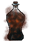 Епископ Ужаса Рецепт зелья (Последовательность 3). Эта Seq нужна для ступени VIII.
Епископ Ужаса Рецепт зелья (Последовательность 3). Эта Seq нужна для ступени VIII.
Ингредиенты
 Епископ Ужаса Характеристика Потустороннего (Последовательность 3) — характеристика Потустороннего
Епископ Ужаса Характеристика Потустороннего (Последовательность 3) — характеристика Потустороннего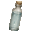
Чужие слёзы — крафт: верстак. Все источники (3)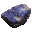
Лазурит — крафт: верстак; сундук: Постройки Мира духов — 29 %. Все источники (5) Бальзам белого каштана — крафт: верстак. Все источники (3)
Бальзам белого каштана — крафт: верстак. Все источники (3)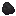
Уголь — обычный предмет
Способности
- Аура ужаса — Излучить ауру ужаса, вселяя страх во врагов: они сильно ослаблены и теряют рассудок
- Прилив тьмы — Затопить область тьмой, неся ужас и смерть всему вокруг
- Меч тьмы — Нанести гигантский разрез, рассекающий всё на пути
Отыгрыш — переваривание за действие и перерыв между засчитанными:
- Убить сильного моба — 0,32 %, раз в 5 с
- Убить во тьме — 0,32 %, раз в 2 с
- Применить «Аура ужаса» — 0,63 %, раз в 20 с
- Поставить голову моба — 0,25 %, раз в 10 с
- Использовать маяк — 0,19 %, раз в 30 с
Seq 2 · Слуга Сокрытия
Зелье 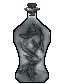 Слуга Сокрытия Рецепт зелья (Последовательность 2).
Слуга Сокрытия Рецепт зелья (Последовательность 2).
Ингредиенты
 Слуга Сокрытия Характеристика Потустороннего (Последовательность 2) — характеристика Потустороннего
Слуга Сокрытия Характеристика Потустороннего (Последовательность 2) — характеристика Потустороннего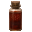
Кровь сфинкса — пустая бутылка: Верблюд — 40 % за попытку, бутылка остывает 10 с; существо мода: Демон знания (водится: Мир духов, океаны; приходит и Ночью Мира духов) — 2,9 % за убийство. Все источники (4)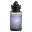
Слизь колонии душезачаровывающих насекомых — крафт: верстак; сундук: Постройки Мира духов — 26 %. Все источники (5)- Лунный камень — блок: Руда незерского кварца (только природный блок) — 12 % за блок; сундук: Постройки Мира духов — 24 %. Все источники (5)
 Редстоуновая пыль — обычный предмет
Редстоуновая пыль — обычный предмет
Способности
- Власть ангела — Ангельская сила: странствуйте по Миру духов и сокрушайте артефакты
- Сокрытие — Скрыть всё вокруг, по сути стерев это
- Сокрытие личности
- Сокрытое владение — Создать сокрытое владение, запечатав тех, кто внутри
Отыгрыш — переваривание за действие и перерыв между засчитанными:
- Убить исподтишка — 0,21 %, раз в 2 с
- Убить во тьме — 0,21 %, раз в 2 с
- Применить «Сокрытие» — 0,42 %, раз в 20 с
- Выпить зелье невидимости — 0,17 %, раз в 10 с
- Красться — 0,021 %, раз в 10 с
- Открыть сундук Края — 0,11 %, раз в 10 с
Seq 1 · Рыцарь Несчастья
Зелье 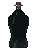 Рыцарь Несчастья Рецепт зелья (Последовательность 1).
Рыцарь Несчастья Рецепт зелья (Последовательность 1).
Ингредиенты
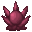
Рыцарь Несчастья Характеристика Потустороннего (Последовательность 1) — характеристика Потустороннего- Дикая роза — блок: Розовый куст (ножницами; биом «лес») — 30 % за блок; существо мода: Безголовая невеста (водится: Мир духов) — 0,49 % за убийство. Все источники (4)
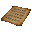
Собственноручно придуманный шифр — существо мода: Демон знания (водится: Мир духов, океаны; приходит и Ночью Мира духов) — 0,95 % за убийство.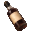
Только что украденное вино — сундук: Аванпост разбойников, Лесной особняк — 35 %. Все источники (3) Лазурит — обычный предмет
Лазурит — обычный предмет
Способности
- Возрождение во тьме (пассивная) — Возрождаться из тьмы ценой медленной утраты себя
Отыгрыш — переваривание за действие и перерыв между засчитанными:
- Убить сильного моба — 0,16 %, раз в 5 с
- Убить при низком здоровье — 0,16 %, раз в 2 с
- Применить «Меч тьмы» — 0,32 %, раз в 20 с
- Убить босса — 0,21 %, раз в 1 мин
- Убить во тьме — 0,084 %, раз в 5 с
- Стоять в полной темноте — 0,032 %, раз в 20 с